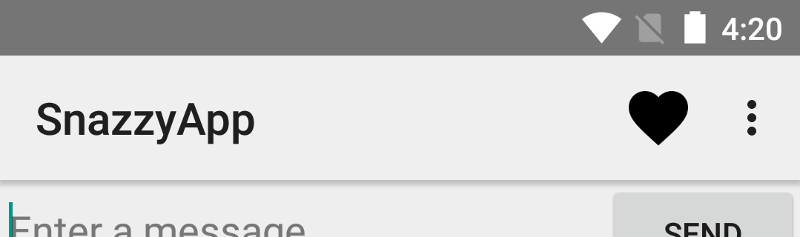

Android App Bar (aka Action Bar)
Abstract
Lernziele
- Sie kennen die technischen Grundlagen der Android Action Bar
- Sie können eine Action Bar in ihre Applikation integrieren
- Sie verstehen wie sie Actions definieren und der Action Bar hinzufügen
Note
Note: The app bar should be implemented using the Android Toolbar to make it available for a wide range of devices. According to the Android developer guidelines, the appcompat Toolbar has the best compatibility support.
Note
Support Library has been superceded by Android Jetpack
With the introduction of Android Jetpack and AndroidX, the support libraries are migrated into Android Jetpack for applications using API Level 28 (Android 9) and above.
So if you plan to implement your application for Android Version > 8.0, you could use Android Jetpack instead of the support libaries (earlier versions still need to make use of the support libraries as outlined in this documentation).
Source: https://developer.android.com/topic/libraries/support-library/setup
Introduction
The app bar, also known as the action bar, is one of the most important design elements in your app’s activities, because it provides a visual structure and interactive elements that are familiar to users. Using the app bar makes your app consistent with other Android apps, allowing users to quickly understand how to operate your app and have a great experience.
The key functions of the app bar are as follows:
- A dedicated space for giving your app an identity and indicating the user’s location in the app.
- Access to important actions in a predictable way, such as search.
- Support for navigation and view switching (with tabs or drop-down lists).
This lecture describes how to use the v7 appcompat support library’s Toolbar widget as an app bar.
Note
Note: There are other ways to implement an app bar—for example, some themes set up an ActionBar as an app bar by default—but using the appcompat Toolbar makes it easy to set up an app bar that works on the widest range of devices, and also gives you room to customize your app bar later on as your app develops.
Choosing the App Bar Implementation
In its most basic form, the action bar displays the title for the activity on one side and an overflow menu on the other. Even in this simple form, the app bar provides useful information to the users, and helps to give Android apps a consistent look and feel.
 An app bar with the app title and an overflow menu
An app bar with the app title and an overflow menu
Beginning with Android 3.0 (API level 11), all activities that use the default theme have an ActionBar as an app bar. However, app bar features have gradually been added to the native ActionBar over various Android releases. As a result, the native ActionBar behaves differently depending on what version of the Android system a device may be using. By contrast, the most recent features are added to the support library’s version of Toolbar, and they are available on any device that can use the support library.
For this reason, it is recommended to use the support library’s Toolbar class to implement activities’ app bars. Using the support library’s toolbar helps ensure that an app will have consistent behavior across the widest range of devices. For example, the Toolbar widget provides a material design experience on devices running Android 2.1 (API level 7) or later, but the native action bar doesn’t support material design unless the device is running Android 5.0 (API level 21) or later.
Adding a Toolbar to an Activity
These steps describe how to set up a Toolbar as an activity’s app bar:
Set the necessary Support Libraries
Add the v7 appcompat support library to your project, as described in Support Library Setup.
In order to use a Support Library, you must modify the application’s project’s classpath dependencies within the development environment. This procedure must be performed for each Support Library that should be used.
To add a Support Library to your application project, include Google’s Maven repository in your top-level build.gradle file.
1 2 3 4 5 6 7 8 9 10 11 12 | |
Then, add the support library to the dependencies section:
1 2 3 4 | |
Warning
Note #1: The compile command in the dependencies section is deprecated by the end of 2018. Use implementation instead.
Warning
Note #2: Make sure that the :support-core-utils version number matches that of the :appcompat-v7 version number, otherwise runtime errors might occur.
The following excerpt from the build.gradle (Module:app) file uses version 26.1.0:
1 2 3 4 5 6 7 8 9 | |
Extend AppCompatActivity
Make sure the activity class extends AppCompatActivity, as illustrated below:
1 2 3 | |
Note
Note: You need to make this change for every activity in your app that uses a Toolbar as an app bar.
Set the NoActionBar Theme
In the app manifest, set the <application> element to use one of appcompat’s NoActionBar themes. Using one of these themes prevents the app from using the native ActionBar class to provide the app bar. For example:
1 2 3 | |
Set the Toolbar’s Layout
Add a Toolbar to the activity’s layout. For example, the following layout code adds a Toolbar and gives it the appearance of floating above the activity:
1 2 3 4 5 6 7 8 | |
Note
Note: The Material Design specification recommends that app bars should have an elevation of 4 dp.
Position the toolbar at the top of the activity’s layout, since you are using it as an app bar.
Call setSupportActionBar()
In the activity’s onCreate() method, call the activity’s setSupportActionBar() method, and pass the activity’s toolbar. This method sets the toolbar as the app bar for the activity.
For example:
1 2 3 4 5 6 7 | |
Make sure that you import the correct Toolbar library, as illustrated below; otherwise the setSupportActionBar() method won’t work.
1 | |
Your app now has a basic action bar. By default, the action bar contains just the name of the app and an overflow menu. The options menu initially contains just the Settings item.
You can add more actions to the action bar and the overflow menu, as described in the next Section → Adding and Handling Actions.
Note
Hint: Use App Bar Utility Methods
Once you set the toolbar as an activity’s app bar, you have access to the various utility methods provided by the v7 appcompat support library’s ActionBar class. This approach lets you do a number of useful things, like hide and show the app bar.
To use the ActionBar utility methods, call the activity’s getSupportActionBar() method. This method returns a reference to an appcompat ActionBar object. Once you have that reference, you can call any of the ActionBar methods to adjust the app bar. For example, to hide the app bar, call ActionBar.hide().
Defining and Handling Actions
The app bar allows you to add buttons for user actions. This feature lets you put the most important actions for the current context right at the top of the app. For example, a photo browsing app might show share and create album buttons at the top when the user is looking at their photo roll; when the user looks at an individual photo, the app might show crop and filter buttons.
Space in the app bar is limited. If an app declares more actions than can fit in the app bar, the app bar send the excess actions to an overflow menu. The app can also specify that an action should always be shown in the overflow menu, instead of being displayed on the app bar.
An app bar with a single action button and an overflow menu.
Defining Action Buttons
All action buttons and other items available in the action overflow are defined in an XML menu resource (→ see https://developer.android.com/guide/topics/resources/menu-resource.html).
To add actions to the action bar, create a new XML file in your project’s res/menu/ directory.
The menu can be accessed (e.g. by the MenuInflater class) using R.menu.{name_of_your_menu_xml_file}.xml.
Add an <item> element for each item you want to include in the action bar, as shown in the following code example of a menu XML file:
1 2 3 4 5 6 7 8 9 10 11 12 13 14 15 | |
The app:showAsAction attribute specifies whether the action should be shown as a button on the app bar.
- If you set
app:showAsAction="ifRoom"(as in the example code’s favorite action), the action is displayed as a button if there is room in the app bar for it; if there is not enough room, excess actions are sent to the overflow menu. - If you set
app:showAsAction="never"(as in the example code’s settings action), the action is always listed in the overflow menu, not displayed in the app bar.
The system uses the action’s icon as the action button, if the action is displayed in the app bar.
You can find many useful icons on the Material Icons page.
Setting Actions on the Toolbar
Warning
Attention: This step is ommitted in the app bar’s official google developer documents!
Actions should be included in the options menu, which is part of the Toolbar if the application is developed for Android 3.0 (API level 11) and higher.
By default, the system places all items in the action overflow, which the user can reveal with the action overflow icon on the right side of the app bar (or by pressing the device Menu button, if available). To enable quick access to important actions, you can promote a few items to appear in the app bar by adding android:showAsAction="ifRoom" to the corresponding <item> elements (see Figure 3).
The Google Play Movies app, showing a search button and the action overflow button.
Note
Hint: You can declare items for the options menu from either your Activity subclass or a Fragment subclass. If both your activity and fragment(s) declare items for the options menu, they are combined in the UI. The activity’s items appear first, followed by those of each fragment in the order in which each fragment is added to the activity. If necessary, you can re-order the menu items with the android:orderInCategory attribute in each <item> you need to move.
To specify the options menu for an activity, override onCreateOptionsMenu() (fragments provide their own onCreateOptionsMenu() callback). In this method, you can inflate your menu resource (defined in XML) into the Menu provided in the callback. For example:
1 2 3 4 5 6 | |
You can also add menu items using add() and retrieve items with findItem() to revise their properties with MenuItem APIs.
If you’ve developed your application for Android 2.3.x and lower, the system calls onCreateOptionsMenu() to create the options menu when the user opens the menu for the first time.
If you’ve developed for Android 3.0 and higher, the system calls onCreateOptionsMenu() when starting the activity, in order to show items to the app bar.
Respond to Actions
When the user selects one of the app bar items, the system calls the activity’s onOptionsItemSelected() callback method, and passes a MenuItem object to indicate which item was clicked. In your implementation of onOptionsItemSelected(), call the MenuItem.getItemId() method to determine which item was pressed. The ID returned matches the value you declared in the corresponding <item> element’s android:id attribute.
For example, the following code checks to see which action the user selected. If the method does not recognize the user’s action, it invokes the superclass method:
1 2 3 4 5 6 7 8 9 10 11 12 13 14 15 16 17 18 19 | |
Adding an Up Action
An app should make it easy for users to find their way back to the app’s main screen. One simple way to do this is to provide an Up button on the app bar for all activities except the main one. When the user selects the Up button, the app navigates to the parent activity.
This section shows you how to add an Up button to an activity by declaring the activity’s parent in the manifest, and enabling the app bar’s Up button.
Declaring a Parent Activity
To support the up functionality in an activity, you need to declare the activity’s parent. This is done in the app manifest, by setting an android:parentActivityName attribute.
Note
Note: The android:parentActivityName attribute was introduced in Android 4.1 (API level 16). To support devices with older versions of Android, define a <meta-data> name-value pair, where the name is "android.support.PARENT_ACTIVITY" and the value is the name of the parent activity.
For example, suppose an app has a main activity named MainActivity and a single child activity. The following manifest code declares both activities, and specifies the parent/child relationship:
1 2 3 4 5 6 7 8 9 10 11 12 13 14 15 16 17 18 19 20 21 22 | |
Enable the Up Button
To enable the Up button for an activity that has a parent activity, call the app bar’s setDisplayHomeAsUpEnabled() method. Typically, this would be done when the activity is created. For example, the following onCreate() method sets a Toolbar as the app bar for MyChildActivity, then enables that app bar’s Up button:
1 2 3 4 5 6 7 8 9 10 11 12 13 14 15 16 | |
There is no need to catch the up action in the activity’s onOptionsItemSelected() method. Instead, that method should call its superclass, as shown in Respond to Actions. The superclass method responds to the Up selection by navigating to the parent activity, as specified in the app manifest.
Action Views and Action Providers
Action Views and Action Providers are advanced topics and will not be covered in this lecture. However, more information can be found on the official android developer pages https://developer.android.com/training/appbar/action-views.
Disclaimer
Most of the information in this lecture has been compiled from the following sources: